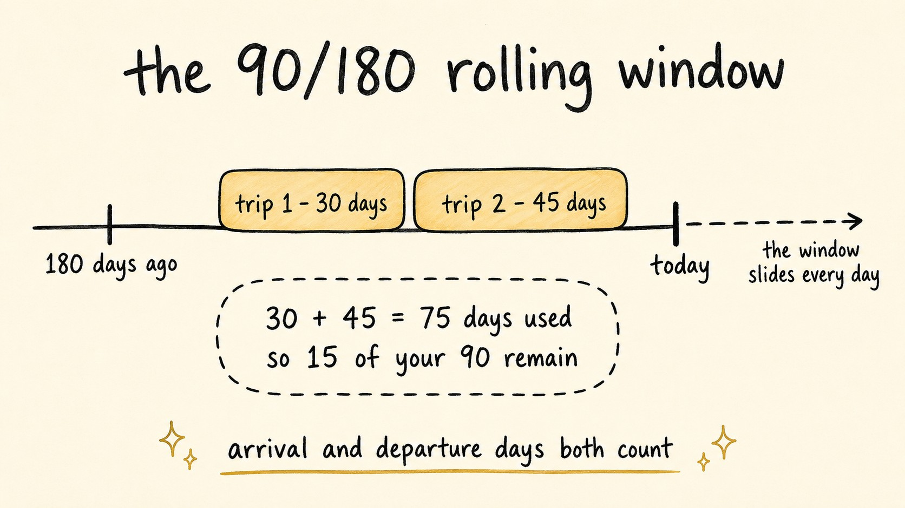

Your 90-Day Schengen Window: Counting Days in the EES Era
Travel Document Vault
Key Takeaways
- Passport stamps are gone. Since 10 April 2026 the EU's Entry/Exit System records every non-EU traveller's Schengen entries and exits digitally, with fingerprints and a facial image.
- EES now detects overstays automatically. Expect refusal at your next entry, and possibly an entry ban of one to five years.
- EES enforces, it doesn't plan. No public portal shows your remaining days - counting your rolling 90/180 window is still your job.
- The EU's official short-stay calculator works, but it's manual - one person, one window, one calculation at a time.
- Families juggle a separate window per person. That's where day-limit tracking in an app earns its place.
On your last trip to Europe you probably collected a stamp at the border. That stamp is gone. Since 10 April 2026, the EU's Entry/Exit System (EES) has been fully operational across the Schengen area, and the smudged ink that once recorded your travels has been replaced by a digital record that starts the moment you cross.
For anyone who counts Schengen days - and every non-EU visitor should - this changes the stakes considerably. Here's what the new system actually does, what it deliberately doesn't do, and how to keep your own count so a border never surprises you.
What Changed at Europe's Borders
EES registers each non-EU traveller's fingerprints, facial image, travel document and exact entry and exit dates. The system had recorded over 52 million border crossings between its phased launch in October 2025 and full operation this spring, and more than 27,000 people were refused entry in that time. First-time registration takes a few minutes at the kiosk, and airports have reported multi-hour queues at peak times this summer while everyone gets used to it.
Not everyone is registered. EU citizens, residents of Schengen countries and long-stay visa holders are exempt. If you're visiting on the visa-free short-stay allowance - most British, American, Canadian and Australian travellers, for instance - EES applies to you.
The 90/180 Rule Under a System That Never Blinks
The rule itself hasn't changed: you may spend at most 90 days inside the Schengen area within any rolling 180-day window. That's not 90 days per calendar year, and the window doesn't reset when you leave. For every day you're present, the previous 180 days must contain no more than 90 days of stay.

What has changed is enforcement. Under passport stamps, proving an overstay meant deciphering faded ink, and border officers had discretion. Now the dates are exact, and the system flags an overstay the moment it happens. Expect refusal at your next entry, and in many cases an entry ban of one to five years, which officials record in the Schengen Information System. The margin for error has gone from fuzzy to zero.
The Catch: EES Enforces, It Doesn't Plan
EES counts your days for enforcement, but it doesn't tell you the number. There's no public portal where you can log in and see "47 days remaining"; the Travel to Europe app handles pre-registration before you fly, not day counts after you arrive. The system records what you did; forecasting what you can still do remains entirely your problem.
The EU publishes an official short-stay calculator that's well worth bookmarking. You enter your past entry and exit dates, and it tells you whether a planned stay fits inside your window. It works well for one traveller who keeps good records. The friction appears when the records live in your memory, or when you're doing the exercise for four people at once.
Travel Document Vault counts Schengen days the way EES does - per person, across every trip - and projects your rolling window forward so you can see what you can still book. Scan each passport once and set day limits per country; the app does the maths for the whole family, and reminders fire at 30, 90, or 180 days before any document expires. Download on the App Store and Google Play.
How to Track Your Window in Practice
The manual method comes first, because it's free and official: take today's date and look back 180 days. Tally every day you were physically inside any Schengen country during that period - arrival and departure days both count. Subtract the total from 90; that's what you have left right now. Because the window rolls, tomorrow the calculation shifts by a day, which is why the EU's calculator asks for your full trip history rather than a single number.
For one person taking a holiday or two a year, that's entirely manageable. It gets harder when trips overlap and people multiply: a business traveller doing short hops every month, or a family where one child is on a school exchange, another has summer camp dates, and a partner flies home early. Each person carries their own rolling window, and the windows don't line up. This is the situation where a tracking tool stops being a gadget and starts being how you avoid an expensive mistake - our guide to visa and entry tracking covers the wider problem.
One honesty note: no app can read your EES record, ours included. What a tracker does is apply the official 90/180 arithmetic to the trip dates you give it, continuously, for every traveller you add. The border counts what happened; a good tracker shows what you can still do.
Three Things EES Is Not
EES isn't a visa system. You don't apply for EES and there's no approval to wait for - it happens automatically at the border instead. Whether you need a visa at all still depends on your nationality, exactly as before.
You don't need insurance or bank statements because of EES. Some early reporting created confusion on this point, but EES records entries and exits - nothing more and nothing else. Insurance requirements belong to specific visa types, not to the border system.
ETIAS is a separate system entirely. It's a pre-travel authorisation for visa-exempt travellers launching later - the exact date hasn't been announced yet. When it arrives you'll apply online before flying, much like the US ESTA. Our ETIAS guide explains what to prepare. For now, EES is the system you'll actually meet at the border.
One Step Ahead of the Border
The digital border is thorough, automatic and unsentimental, but staying inside the 90/180 rule was never about the border - it's about knowing your own dates before you book. Keep your trip history somewhere reliable, run the numbers before committing to travel, and treat the counting as part of planning rather than something to reconstruct at the gate. EES will do the enforcing. The planning is still yours, and it's the cheaper half to get right.
Frequently Asked Questions
What happens if I overstay the Schengen 90/180 rule by one day?
EES records every entry and exit digitally, so even a short overstay is flagged automatically. You can expect refusal the next time you try to enter the Schengen area, and depending on the circumstances an entry ban of one to five years is possible. Accurate day counting matters more than it ever did.
Can I check how many Schengen days I have left after entering?
There is currently no public portal where travellers can look up their own EES record or remaining days. EES data is held by border authorities. You need to track your own rolling 180-day window, either with the EU's official short-stay calculator or your own records.
Do I need a visa or travel insurance because of EES?
No. EES does not create any new visa or insurance requirement. It replaces passport stamping with a digital record of your entries and exits. Whether you need a visa still depends on your nationality, and insurance requirements belong to specific visa types, not to EES.
Is ETIAS the same thing as EES?
No. EES is live now and registers your entry and exit at the border. ETIAS is a separate pre-travel authorisation for visa-exempt travellers that launches later - the exact date has not been announced. You do not apply for EES; it happens at the border automatically.
How does Travel Document Vault help with the 90/180 rule?
The app counts days per person, per country, across all your trips, and projects your rolling window forward before you book. It does not read your EES record - no app can - but it applies the official 90/180 calculation to your travel dates, so every family member's remaining days are visible at a glance.